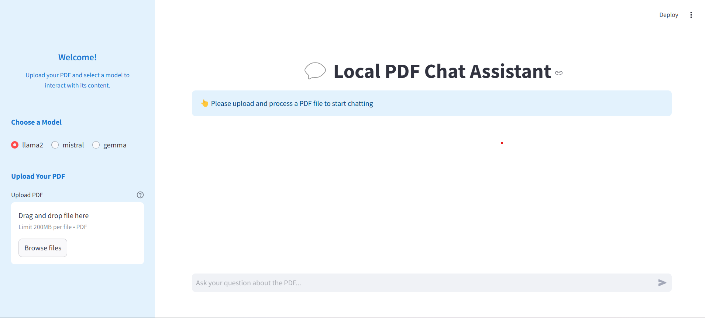

Introduction
Welcome to the Local PDF Chat Assistant documentation! This application is designed to revolutionize the way users interact with PDF documents by leveraging the power of natural language processing (NLP) and advanced AI models. It provides a seamless interface for querying and exploring PDF content efficiently and intuitively.
### Overview
The Local PDF Chat Assistant allows users to: - Upload PDF Files: Users can upload PDF documents to extract and process content. - Ask Contextual Questions: Through an interactive chat interface, users can pose questions related to the uploaded PDF, and the application provides accurate, context-aware responses. - View Sources: Responses generated from the PDF include source references, ensuring traceability and transparency.
This application is built with a focus on user experience, enabling easy access to document information without manually searching through pages.
—
### Streamlit Interface
The application provides an intuitive interface for uploading PDFs, selecting models, and querying documents. Below is an example of the interface:
{kind=link}
### Key Features
Interactive PDF Chat: - Upload a PDF and start asking questions in plain language. - The app understands the context and retrieves relevant answers from the document.
Model Selection: - Choose between different AI models (e.g., llama3, mistral, gemma) based on your preference or computational needs.
Source-Based Responses: - Get answers that are backed by the exact source from the document for credibility and validation.
Optimized PDF Processing: - Utilizes the LangChain library for text segmentation and FAISS for efficient vector storage and retrieval.
Streamlit User Interface: - A simple, intuitive interface for uploading PDFs, selecting models, and querying the document.
—
### How It Works
PDF Upload and Processing: Users upload a PDF via the sidebar. The application processes the file using advanced text splitting techniques to extract and structure the content into manageable chunks.
Embedding and Vector Storage: The extracted chunks are embedded using a selected AI model, and a vector store (FAISS) is created for efficient document retrieval.
Interactive Chat: Users type questions in the chat interface. The app retrieves the most relevant chunks, generates a response, and displays it with the corresponding source references.
Model Flexibility: Switch between supported AI models to optimize for performance or specificity.
—
### Use Cases
The Local PDF Chat Assistant is versatile and can be used in various scenarios: - Research and Study:
Extract information from academic papers or books without manually skimming through pages.
Business and Legal: Quickly find specific clauses or terms in lengthy contracts and agreements.
Data Analysis: Analyze reports or data-heavy documents by querying specific sections.
—
### Technology Stack
The Local PDF Chat Assistant is powered by: - Streamlit: For the user interface and real-time interactivity. - LangChain: For text splitting, embeddings, and conversational AI chains. - FAISS: For efficient vector-based search and retrieval. - Ollama Models: State-of-the-art NLP models for embedding and querying.
—
This documentation will guide you through the installation, usage, and configuration of the Local PDF Chat Assistant. Dive into the sections below to learn how to get started!